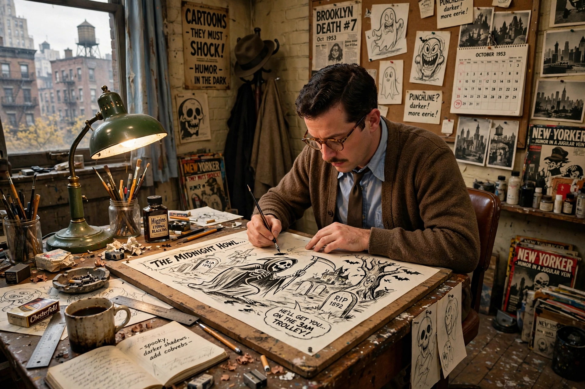

| Born | Charles Samuel Addams, 7 January 1912, Westfield, New Jersey |
|---|---|
| Died | 29 September 1988, New York City |
| Occupation | Cartoonist |
| Known for | The Addams Family; New Yorker cartoons |
Charles Samuel Addams (1912-1988) was an American cartoonist famous for macabre, darkly humorous single-panel cartoons, many in The New Yorker, and for creating The Addams Family.
Life
Born in Westfield, New Jersey, Addams studied art and sold his first New Yorker cartoon in 1932, becoming a regular contributor for over five decades. He collected antique weapons and was fascinated by the macabre, though colleagues described him as courteous and gentle.
Work
His unnamed ghoulish family - Gomez, Morticia, Wednesday, Pugsley, Uncle Fester, Lurch, Grandmama and Thing - inspired the 1964-66 television series (for which he named the characters), later films, an animated series and the musical and Wednesday adaptations.
Legacy
Collections such as Drawn and Quartered and Homebodies remain in print, and his home town of Westfield celebrates AddamsFest.